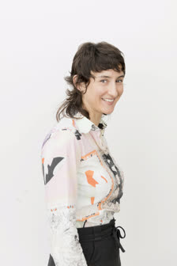
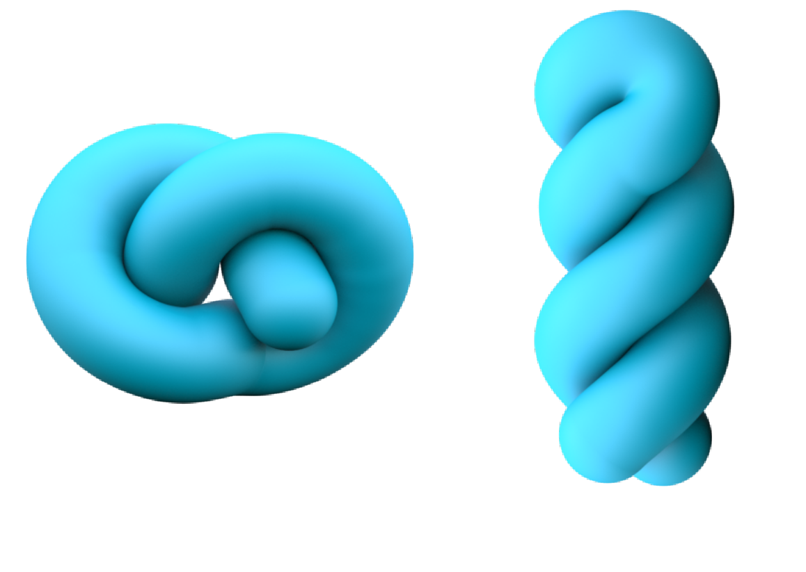

Rhoslyn Coles

Contact
TU Chemnitz, Fakultät für Mathematik
Reichenhainer Straße 39/41
Office: C46.717
Email: rhoslyn.coles"aloop"math.tu-chemnitz.de

TU Chemnitz, Fakultät für Mathematik
Reichenhainer Straße 39/41
Office: C46.717
Email: rhoslyn.coles"aloop"math.tu-chemnitz.de
I am a postdoctoral researcher at the Technische Universität Chemnitz working within the Reiter Group (Harmonic Analysis). I completed my PhD at the Technische Universität Berlin in February 2024 under the supervision of Prof. Myfanwy Evans.
I am interested in using geometry and topology to explore the relationship between the shape and function of materials. The relatability of my work within this interdisciplinary context is a big source of inspiration for my research. I use results and methods from several diverse fields: from integral geometry and geometric measure theory to computer simulation approaches of knot theory and soft condensed matter physics, incorporating tools of stochastic optimization and computational topology.
Geometry, differential geometry, geometric knot theory, numerical optimization, mathematical visualization
My research investigates the geometry of thickened curves through mathematical experimentation and geometric analysis. A thickened curve is a self-avoiding space curve whose unit-radius tube does not overlap itself, coming at most into contact. This simple model aims to relate geometry and real tube-like materials, by enabling a geometry-centred study that would be challenging with more physically detailed and thereby technically demanding models. For curves, tangling or intertwining is a natural geometric phenomenon, with important consequences for the properties of many materials.

My recent publication with Myf Evans considers the thickened curve as a model for a short open biopolymer, dissolved in a hard-sphere solvent (liquid). A consequence of the fluid environment is that the tube folds to adopt an energetically favourable configuration—a process known as solvation. Our study utilises the morphometric approach to solvation, a geometry-based method for computing the thermodynamic energy of the fluid. Using this approach as a simulation technique we derived a phase diagram of low energy configurations over a comprehensive range of physically realistic solvents. In essence this demonstrates that the solvent can fold a freely formable tube into complex geometries. The two most prominent examples are a double-helical configuration, in which the tube folds back on itself, and an overhand-knot shape (shown right). Our main result is the identification of these geometries as thermodynamically favourable, in particular when compared with the single helix—a prevalent biopolymer structural motif.
Can Solvents Tie Knots? Helical Folds of Biopolymers in Liquid Environments
with M. Evans, PNAS Nexus, 2026. DOI.10.1093/pnasnexus/pgag003
Exotic Self-Assembly of Hard Spheres in a Morphometric Solvent
with I. Sirandelli, G. Friesecke, and M. Evans, PNAS, 2024. DOI:10.1073/pnas.2314959121
Experiments with Curves Inspired by the Morphometric Approach to Solvation
PhD Thesis Technische Universität Berlin, 2024. Available here.
Curvature in Biological Systems: Its Quanitification, Emergence, and Implications across the Scales
with B. Schamberger et al., Review Article: Adv Mater. 2023. DOI:10.1002/adma.202206110